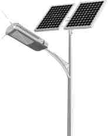
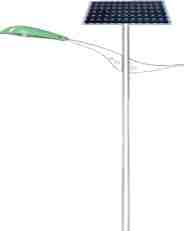
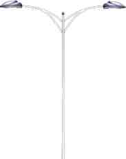
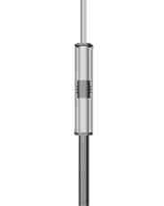

- 问：
- 答：
太阳能路灯不亮什么办？
1.检查控制器蓄电池指示灯是否点亮，如果不亮检查控制器和蓄电池的连
接线是否脱落，若连接线正常，用万用表检测蓄电池电压，蓄电池电压正常，
更换控制器。2.检查控制器负载指示灯是否点亮，用万用表检测输出电压，看是否有电压
输出。如果没有电压输出，更换控制器。3.泉州万春太阳能路灯厂家可以维护，欢迎咨询

- 问：
- 答：
太阳能路灯阴天会亮吗？
这个问题大家都是很关心的，答案是可以亮的
太阳能路灯是靠太阳能通过电池板发电储存到蓄电池中，然后晚上放电亮
灯的。这是光发电存在蓄电池里面，然后蓄电池再放电点亮LED灯的过程。因
此太阳能路灯要在阴天下雨也能正常工作，那就必须得加大蓄电池的容量，保
证蓄电池在晴天的时候充满电，在阴天的时候有足够的容量释放出来就行了，
灯就可以亮了

- 问：
- 答：
泉州LED路灯一套要多少钱？
常规配置30瓦，普通光源，6米灯杆一盏只要1100元左右，但照明时间不
够长，下雨天就亮不起来 常规配置30瓦，进口光源，6米灯杆一盏需要1480
元左右，照明时间可达12小时，下雨天也可亮3-5天 一分钱一分货，建议使用
好的光源

- 问：
- 答：
什么样的灯杆不容易生锈？
灯杆表面处理有三种方式
1.灯杆表面先进行热镀锌，再进行喷漆 2.灯杆表面直接热镀锌 3.灯杆表面直
接喷漆或者烤漆以上三种处理方式，价格差异较大，先热镀锌，再烤漆10年不生锈，价格当
然也是最贵的，经过热镀锌的灯杆抗腐蚀能力最强，当然跟热镀锌厚度也是有
关系的，因此买路灯不要贪图便宜